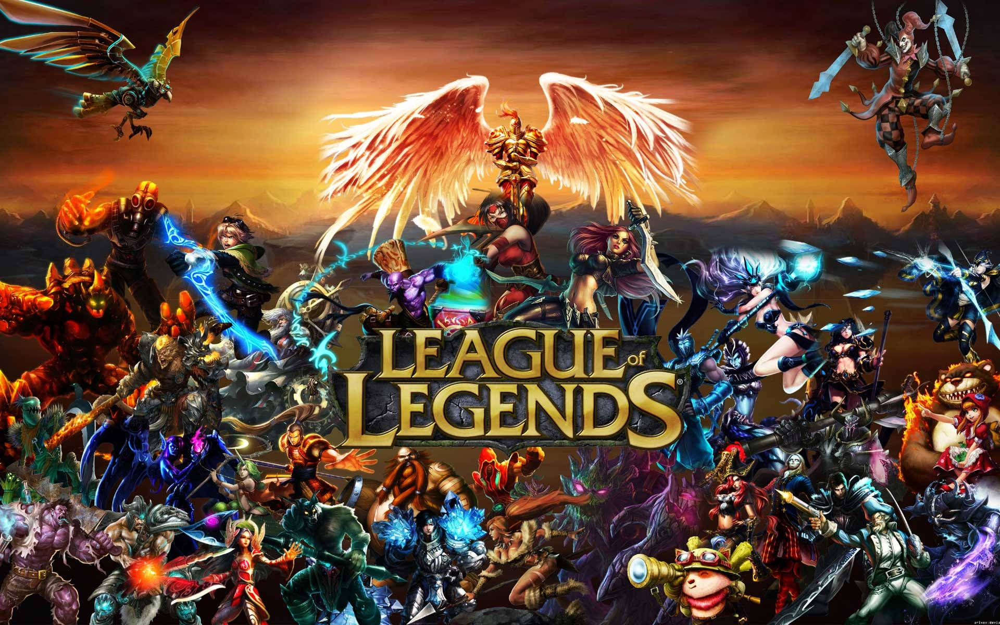
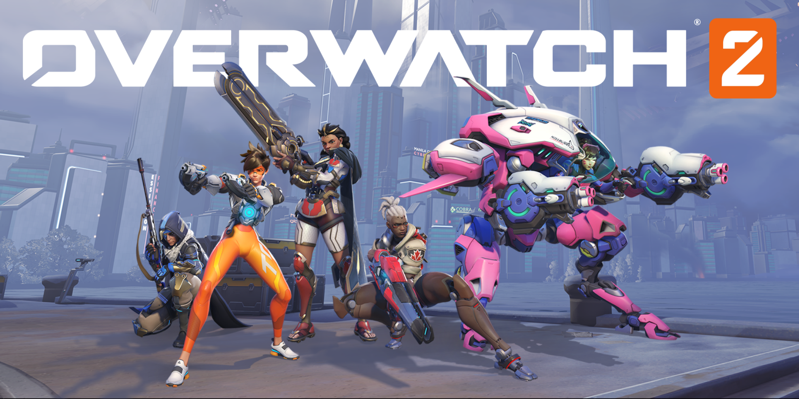

League of Legends
Um ótimo jogo para você passar o tempo. Competitivo, apresenta também o trabalho em equipe que é primordial para o funcionamento do jogo e com diversos bonecos com personalidades únicas. Estilo moba 5x5.
leia mais.Overwatch 2
Overwatch 2 é um jogo de ação em equipe grátis para jogar em constante evolução que se passa em um futuro otimista, no qual cada partida é um campo de batalha 5v5 definitivo com heróis em constante evolução, novos mapas, diferentes maneiras de jogar e itens cosméticos únicos! Lidere o ataque, embosque inimigos ou auxilie os seus aliados como um dos mais de 35 heróis diferentes de Overwatch. Junte seus amigos, entre na luta em mais de 25 mapas futuristas inspirados em locações do mundo real e domine vários modos de jogo únicos.
leia mais.Diablo 4

Com Lilith sendo o grande nome do jogo, Diablo IV se apoia na vilã para oferecer uma jornada memorável aos jogadores. Recuperando as eras de glória da franquia, o jogo da Blizzard é robusto e maduro, com muita qualidade técnica.
Em Diablo IV, os fãs de action RPG encontram um mundo sombrio repleto de elementos que incentivam a exploração. Com muito conteúdo, o jogo oferece uma excelente campanha e diversos desafios memoráveis, incluindo as inúmeras ótimas batalhas contra chefes poderosos.
Resident Evil 4 Remake

Resident Evil 4 Remake é mais um remake de terror que chegou com tudo em 2023. Com o ano sendo muito interessante para fãs de survival horror, o título da Capcom se aproximou ainda mais de uma pegada sombria, ganhando uma tensão maior que o jogo original. No entanto, o remake ainda respeita o conteúdo que se tornou um dos favoritos dos fãs.
leia mais.Postagens Recentes
Para aqueles que são fãs da franquia Warhammer, o título Warhammer: End Times - Vermintide está em promoção por tempo limitado na Steam. Similar ao famoso Left 4 Dead, o título permite que os jogadores escolham entre cinco heróis para encarar hordas de inimigos, finalizando missões e recebendo melhorias ao longo da jornada.
leia mais.